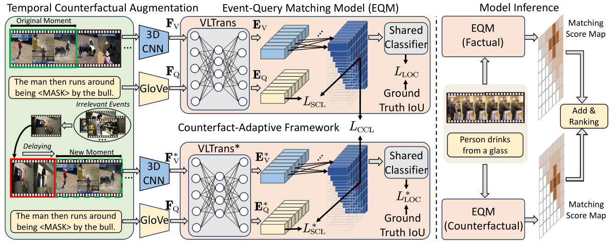
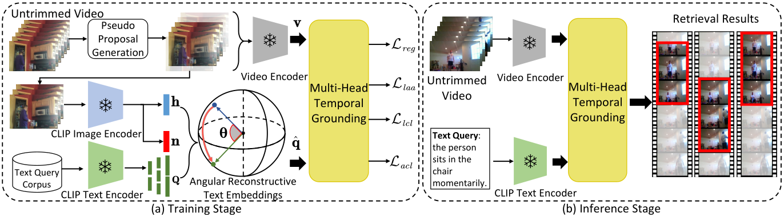
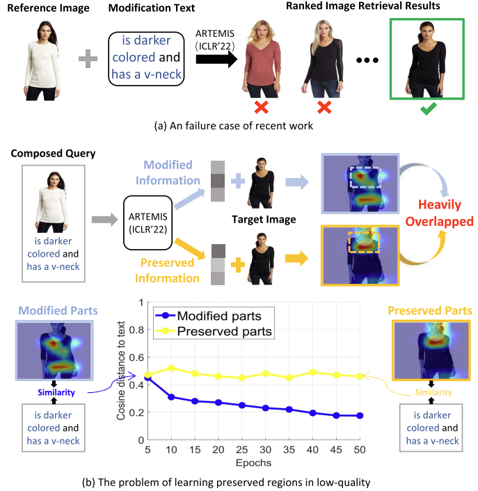
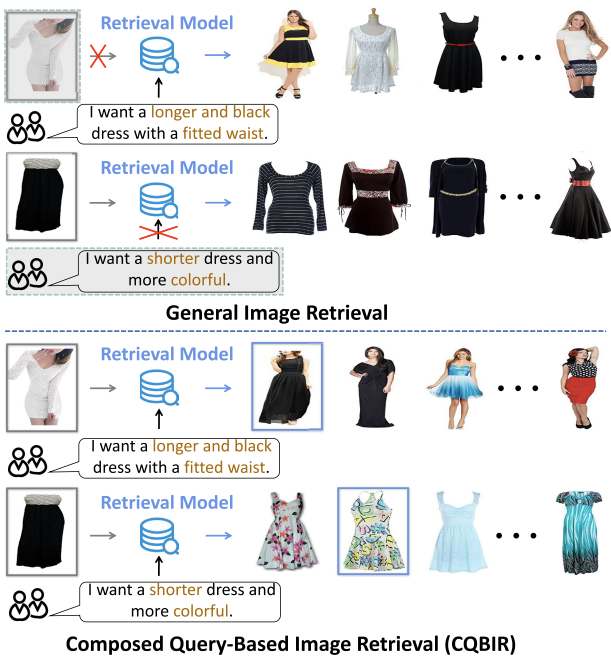
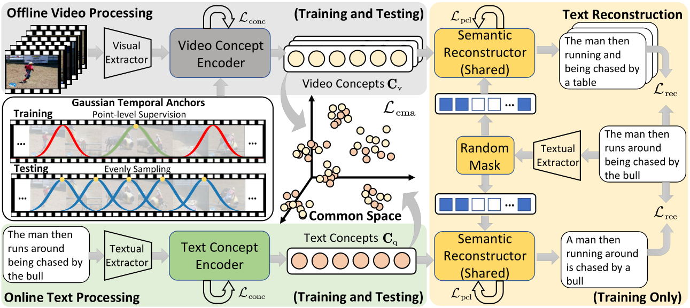
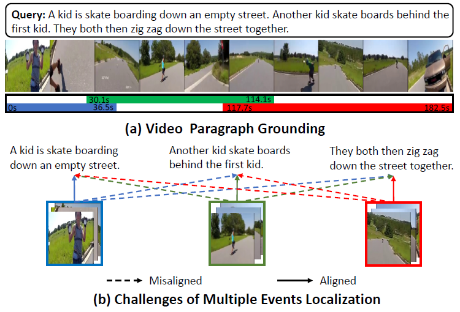

Xun Jiang
I am a third-year Ph.D student in Successive Postgraduate and Doctoral Program at CFM lab of the University of Electronic and Science of China (UESTC), supervised by Prof. Heng Tao Shen, co-supervised by Prof. Fumin Shen and Prof. Xing Xu. Before that, I earned my bachelor's degree in Software Engineering from UESTC in 2020, where I was recognized as an Honor Graduate. Now, I am a visiting Ph.D. student of MReal Lab at Nanyang Technological University under the supervision of Prof. Hanwang Zhang.
My research interests include, but are not limited to, Multimedia Retrieval, Multimodal Learning, Long-term Video Understanding, and Weakly-Supervised Learning. Currently, I am serving as a Journal Reviewer/PC Member for IEEE TIP, IEEE TCSVT, ACM TOMM, CVPR, ACM MM, AAAI, WWW, ICME, ICMR, and ACPR.
I am always open to academic exchange. Please feel free to contact me if you are interested in discussing my research topics.
Email: xun_jiang@outlook.com
Education
|
|
University of Electronic Science and Technology of China (UESTC), China |
|
|
University of Electronic Science and Technology of China (UESTC), China |
News
Publications
Currently, I'm working on multimodal learning in video content understanding, particularly the problems of weakly-supervised learning, robustness, and bias-resisting within it.
|  |
Counterfactually Augmented Event Matching for De-biased Temporal Sentence Grounding Xun Jiang, Zhuoyuan Wei, Shenshen Li, Xing Xu, Jingkuan Song, Heng Tao Shen ACM Internation Conference on Multimedia, ACM MM 2024 [Paperlink], [Code] Key Words: De-biased Video Grounding; Counterfactual Reasoning; Multimodal Learning |
|  |
Zero-Shot Video Moment Retrieval with Angular Reconstructive Text Embeddings Xun Jiang, Xing Xu, Zailei Zhou, Yang Yang, Fumin Shen, Heng Tao Shen IEEE Transactions on Multimedia, TMM 2024 [Paperlink], [Code] Key Words: Video Content Understanding; Weakly-Supervised Learning; CLIP |

|
Embracing Unimodal Aleatoric Uncertainty for Robust Multimodal Fusion Zixian Gao*, Xun Jiang* (* equal contribution), Xing Xu, Fumin Shen, Yujie Li, Heng Tao Shen IEEE/CVF Computer Vision and Pattern Recognition Conference, CVPR 2024 [Paperlink], [Code] Key Words: Multimodal Learning; Model Robustness; Uncertainty in Deep Learning |
|  |
Cross-Modal Attention Preservation with Self-Contrastive Learning for Composed Query-Based Image Retrieval Shenshen Li, Xing Xu, Xun Jiang, Fumin Shen, Zhe Sun, Andrzej Cichocki ACM Transactions on Multimedia Computing, Communications, and Applications, ACM TOMM 2024 [Paperlink], [Code] Key Words: Cross-modal Retrieval; Composed Query-Based Image Retrieval; Multimodal Learning |

|
Joint Searching and Grounding: Multi-Granularity Video Content Retrieval Zhiguo Chen*, Xun Jiang* (* equal contribution), Xing Xu, Zuo Cao, Yijun Mo, Heng Tao Shen ACM Internation Conference on Multimedia, ACM MM 2023 [Paperlink], [Code] Key Words: Multimedia Retrieval; Video Content Understanding; Multimodal Learning |
|  |
Multi-Grained Attention Network with Mutual Exclusion for Composed Query-Based Image Retrieval Shenshen Li, Xing Xu, Xun Jiang, Fumin Shen, Xin Liu, Heng Tao Shen IEEE Transactions on Circuits and Systems for Video Technology, TCSVT 2023 [Paperlink], [Code] Key Words: Cross-modal Retrieval; Composed Query-Based Image Retrieval; Multimodal Learning |
|  |
Faster Video Moment Retrieval with Point-Level Supervision Xun Jiang, Zailei Zhou, Xing Xu, Yang Yang, Guoqing Wang, Heng Tao Shen ACM Internation Conference on Multimedia, ACM MM 2023 [Paperlink], [Code] Key Words: Video Content Retrieval; Point-level Supervision; Retrieval Efficiency |

|
SDN: Semantic Decoupling Network for Temporal Language Grounding Xun Jiang, Xing Xu, Jingran Zhang, Fumin Shen, Zuo Cao, Heng Tao Shen IEEE Transactions on Neural Networks and Learning Systems, TNNLS 2022 [Paperlink], [Code] Key Words: Video Content Understanding; Vision-Language; Multimodal Learning |

|
DHHN: Dual Hierarchical Hybrid Network for Weakly-Supervised Audio-Visual Video Parsing Xun Jiang, Xing Xu, Zhiguo Chen, Jingran Zhang, Jingkuan Song, Fumin Shen, Huimin Lu, Heng Tao Shen, ACM Internation Conference on Multimedia, ACM MM 2022 [Paperlink], [Code] Key Words: Video Content Understanding; Action Localization; Audio-Visual Learning |
|  |
GTLR: Graph-Based Transformer with Language Reconstruction for Video Paragraph Grounding Xun Jiang, Xing Xu, Zhiguo Chen, Jingran Zhang, Fumin Shen, Zuo Cao, Xunliang Cai, IEEE International Conference on Multimedia and Expo, ICME 2022 [Paperlink], [Code] Key Words: Video Content Understanding; Vision-Language; Multimodal Learning |

|
Semi-Supervised Video Paragraph Grounding With Contrastive Encoder Xun Jiang, Xing Xu, Jingran Zhang, Fumin Shen, Zuo Cao, Heng Tao Shen IEEE/CVF Conference on Computer Vision and Pattern Recognition, CVPR 2022 [Paperlink], [Code] Key Words: Video Content Understanding, Semi-Supervised Learning; Multimodal Learning |